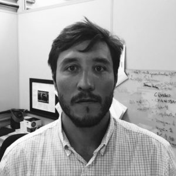

Metabolômica e desreplicação
Estudo de conjuntos de metabólitos e estratégias para reconhecer substâncias já conhecidas em extratos, priorizando componentes que merecem análise aprofundada.
 IPPN / UFRJPesquisa & colaboraçãoConectar uma demanda
IPPN / UFRJPesquisa & colaboraçãoConectar uma demandaProfessor Associado · IPPN / UFRJ
Metabolômica, produtos naturais e integração de evidências analíticas para compreender a composição de amostras complexas.

PESQUISA / LAABio
O Laboratório de Análise e Avaliação da Biodiversidade conecta dados analíticos à investigação de produtos naturais e sistemas biológicos.
A pesquisa busca ampliar a caracterização de substâncias em misturas, combinando cromatografia, espectrometria de massas, ressonância magnética nuclear e ferramentas computacionais. O foco é aproveitar as evidências disponíveis para comparar perfis químicos, reconhecer constituintes e orientar as próximas etapas de investigação.
Estudo de conjuntos de metabólitos e estratégias para reconhecer substâncias já conhecidas em extratos, priorizando componentes que merecem análise aprofundada.
Combinação de informações complementares sobre composição e estrutura para investigar a identidade de substâncias em amostras complexas.
Processamento e interpretação de dados, consulta a bancos e desenvolvimento de abordagens computacionais para apoiar a anotação de substâncias.
Conexão entre separação cromatográfica e resposta em ensaios biológicos para localizar constituintes de interesse e orientar seu estudo.
COMPETÊNCIAS ANALÍTICAS
A escolha da estratégia depende da amostra e da pergunta científica.
Separação de componentes, obtenção de perfis cromatográficos e investigação de diferenças entre amostras.
Estudo de evidências de massa e fragmentação para apoiar a caracterização de substâncias e a comparação de misturas.
Uso de dados de RMN na desreplicação e na investigação da identidade e estrutura de constituintes.
Organização de resultados e integração de evidências para distinguir diferenças químicas e priorizar hipóteses de pesquisa.
POSSÍVEIS APLICAÇÕES / EMPRESAS
Exemplos de colaboração a discutir com o grupo, conforme viabilidade científica e recursos disponíveis.
Pergunta: quais diferenças químicas distinguem os materiais?
Possível contribuição: perfis comparativos e investigação de constituintes associados às diferenças observadas.
Pergunta: a composição muda entre condições ou etapas do processo?
Possível contribuição: comparação de perfis químicos e seleção de componentes para acompanhamento posterior.
Pergunta: quais constituintes de um extrato devem ser estudados em maior detalhe?
Possível contribuição: desreplicação, priorização de frações e integração de evidências para caracterização.
Pergunta: quais alterações químicas acompanham uma condição experimental?
Possível contribuição: investigação metabolômica comparativa, em colaboração com equipes da área de aplicação.
Esses exemplos são possibilidades de pesquisa e desenvolvimento. A interpretação depende do desenho experimental e da qualidade dos dados; anotação de candidatos e identificação confirmada representam níveis distintos de evidência.
CONEXÃO COM A INFRAESTRUTURA
O planejamento pode envolver a infraestrutura multiusuária do IPPN. Técnicas, disponibilidade, condições de acesso e orçamento devem ser alinhados com os laboratórios responsáveis.
CONTATO & REFERÊNCIAS
Descreva a amostra, o problema e o objetivo do estudo para iniciar a avaliação científica.
Conversar sobre uma colaboraçãoConteúdo preparado para revisão pelo docente. As aplicações são propostas editoriais fundamentadas no perfil científico, sujeitas à definição conjunta do projeto.
Voltar ao quadro docente